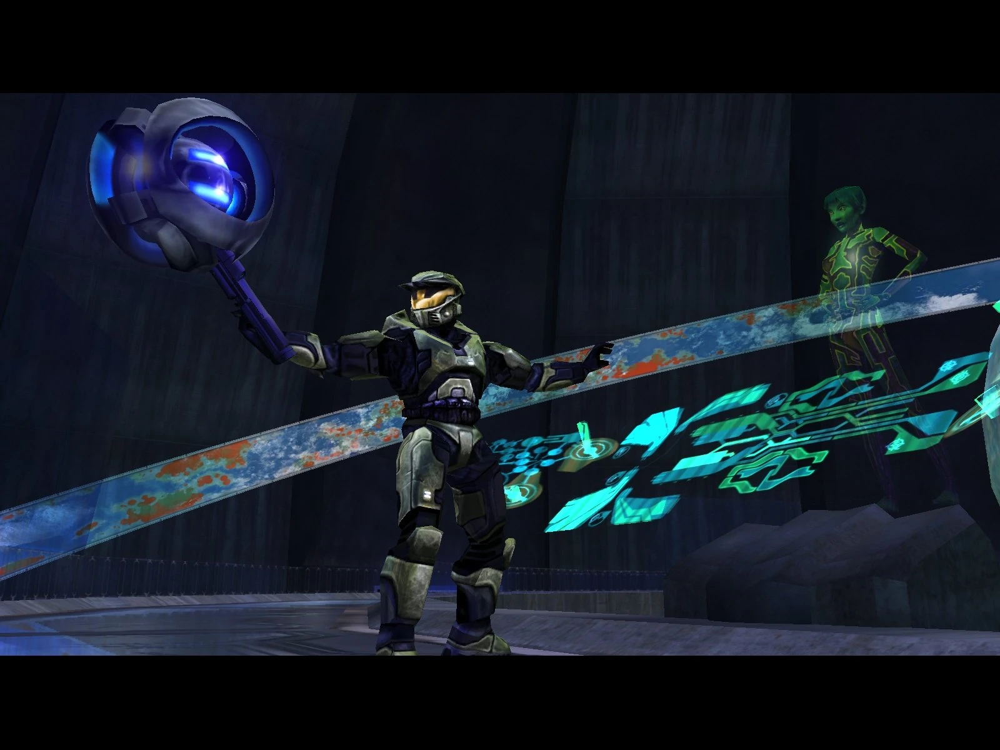
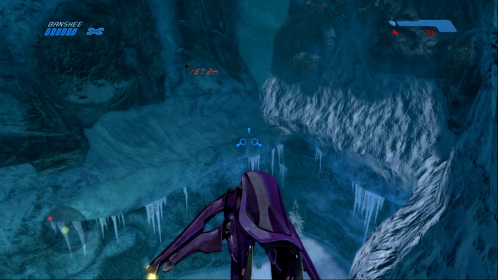

Mergi la inceput
Mergi inapoi
Two Betreyals
După ce află că Halo este o armă de distrugere în masă, Cortana îi spune lui Master Chief
să distrugă sistemele care ar putea activa inelul.Misiunea include lupte împotriva Covenant
și Flood, dar și împotriva turnurilor automate de apărare controlate de Guilty Spark. Jucătorul
revizitează locații din nivelul Assault on the Control Room, dar în condiții diferite (pe timp de
noapte, cu noi inamici).


Urmatorul nivel.